Implementation of upd_plan.md. Reproducible evidence: full browser checks, targeted fixtures, reward frame measurements, capture and audio-request timeline.
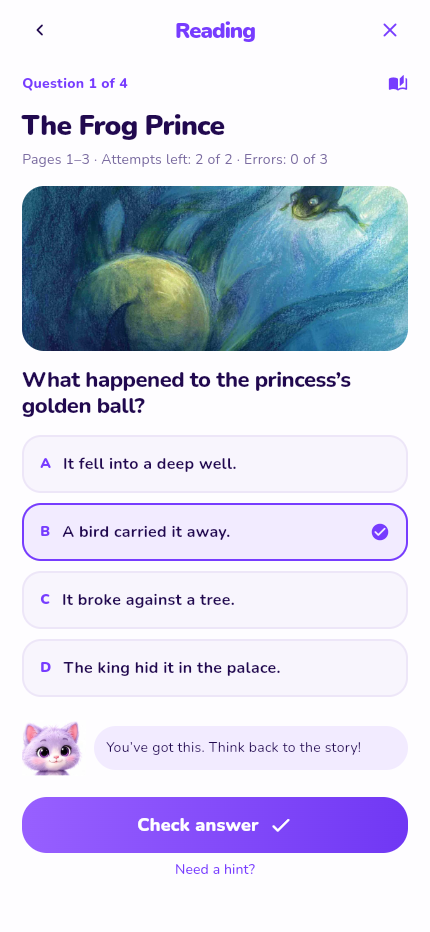
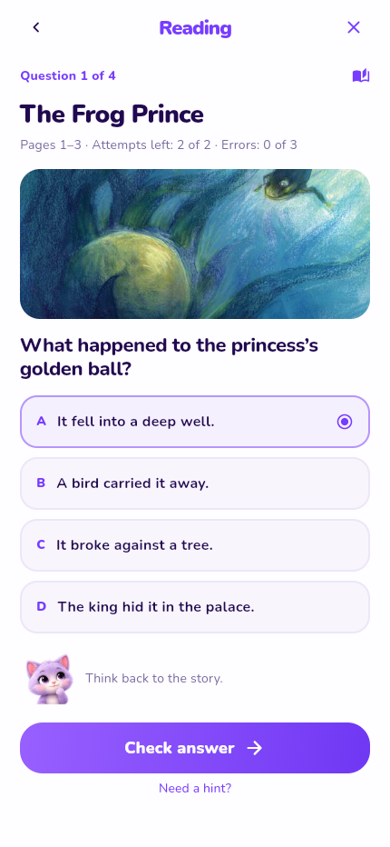
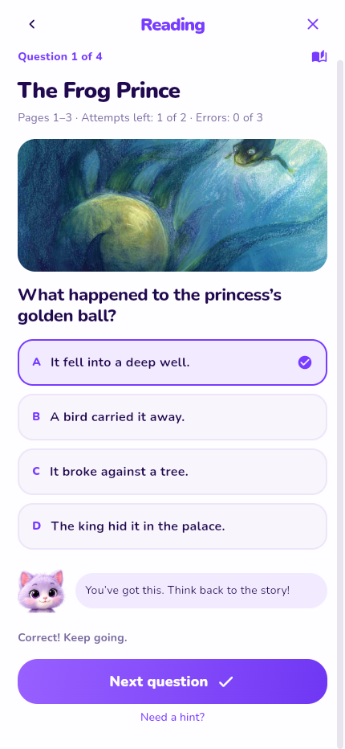
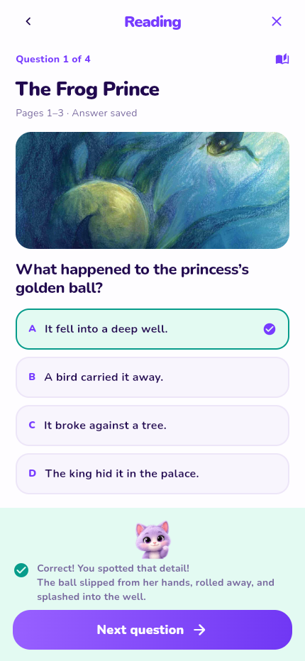
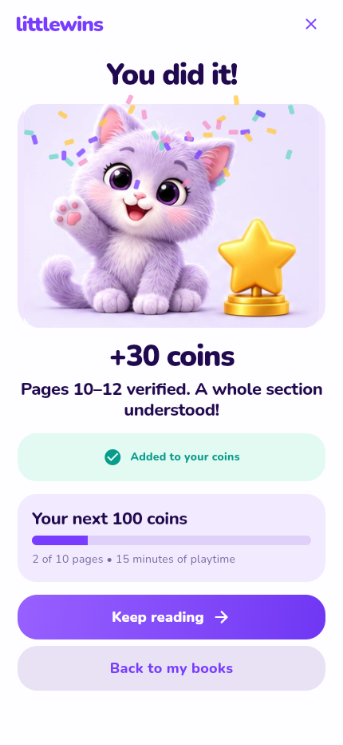
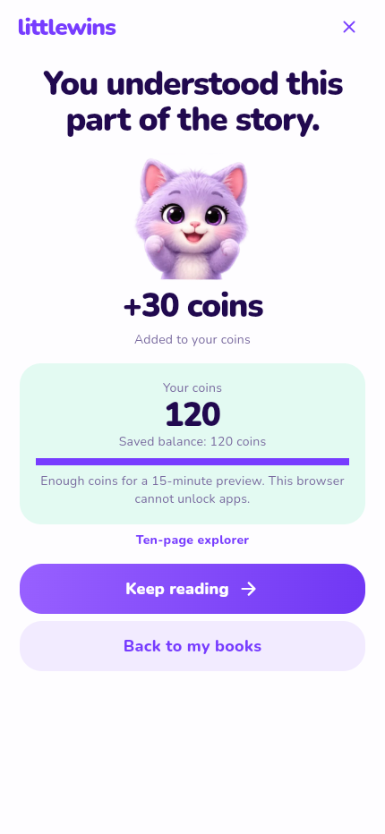
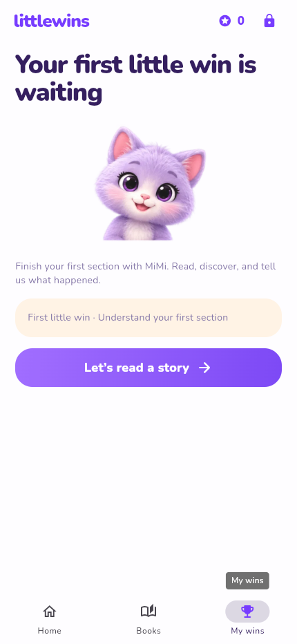
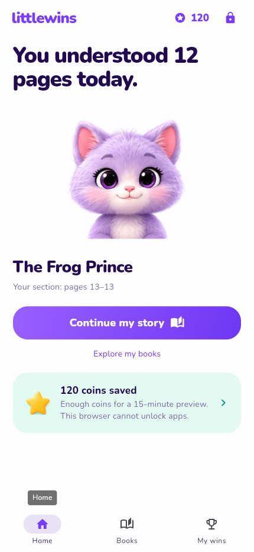
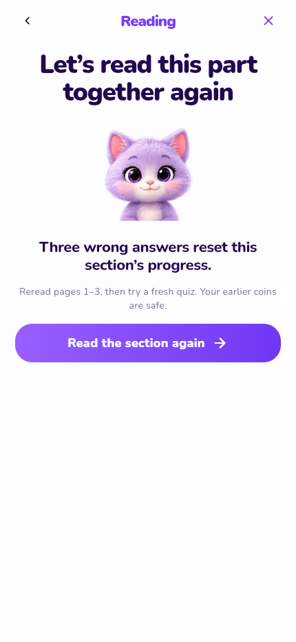
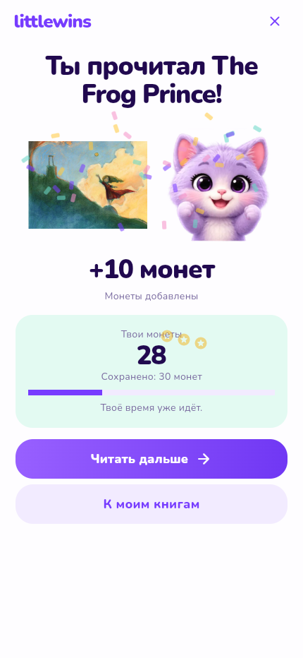
Frames extracted from the recorded reward sequence. Measured on the software-rendered headless host with video and blocked audio: median 16.7ms, p95 66.7ms, with 8 of 79 frame intervals above 33.4ms. The 60fps median did not hold throughout the sequence. The profile records browser animation cadence and CDP events; it is not a native-device performance or haptics measurement.
Onboarding, selection, retries, reset, rereading, milestones, purchase, reload, mute, Russian UI with English questions, and book completion.
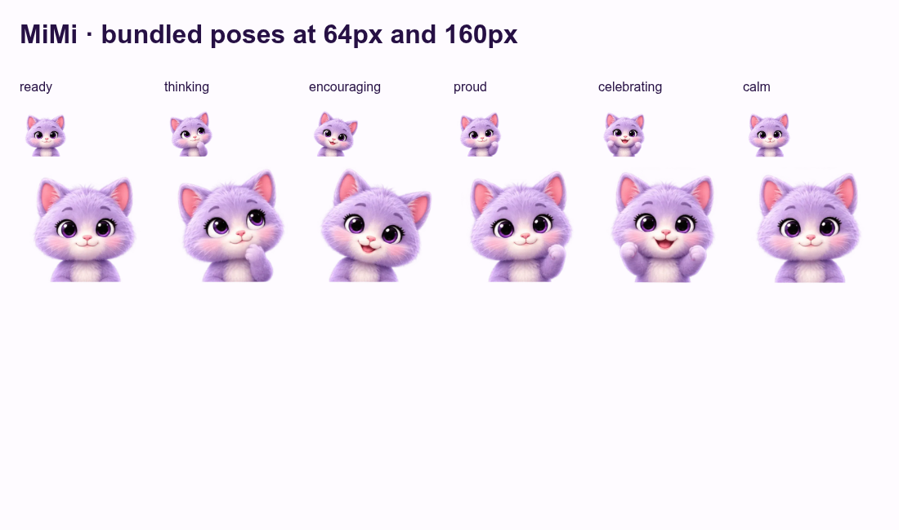
Validation used Flutter web. No MobAI, native-device haptics/audio listening review, or child usability study was performed.